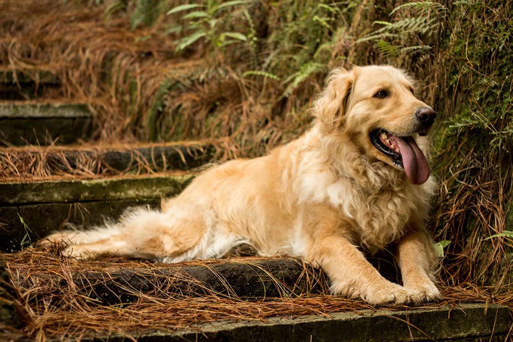

El golden es una raza de perro que se desarrolló alrededor de 1850 en el Reino Unido, más concretamente en Escocia. Con sus características de perro cobrador, sabueso, bloodhound y spaniel de agua, es un hábil perro de caza con aptitudes para el rastreo. Posee una disposición amigable y una actitud que lo ha convertido en una de las razas familiares más populares mediante registro en los Estados Unidos, Argentina y en Canadá, el quinto más popular en Australia, y la octava raza más popular en el Reino Unido. Es un perro de un carácter amigable, siempre dispuesto al cobro de presas el perro se crio por primera vez en Guisachan (Escocia), fue concebido para recuperar las presas tanto en el agua como en la tierra.
| perros golden | golden | entretenimiento |
|---|---|---|
|  | |
|